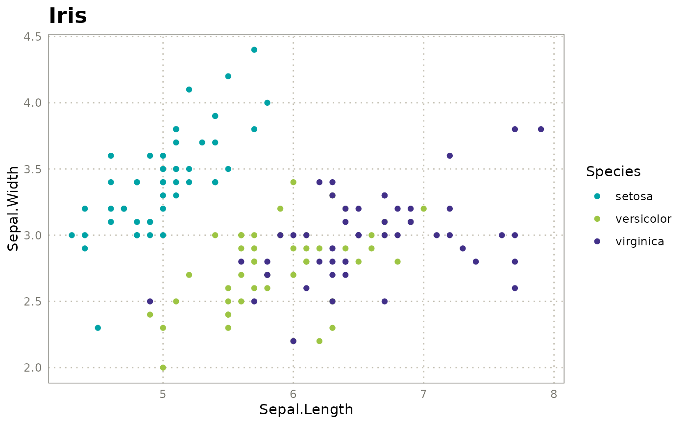
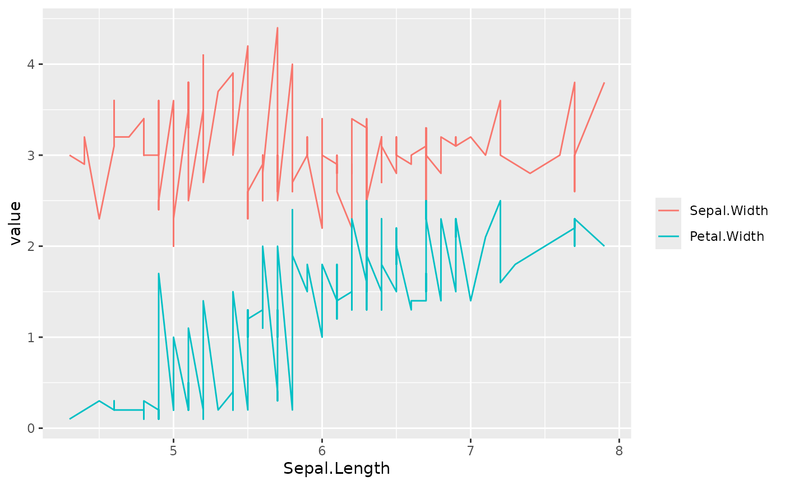
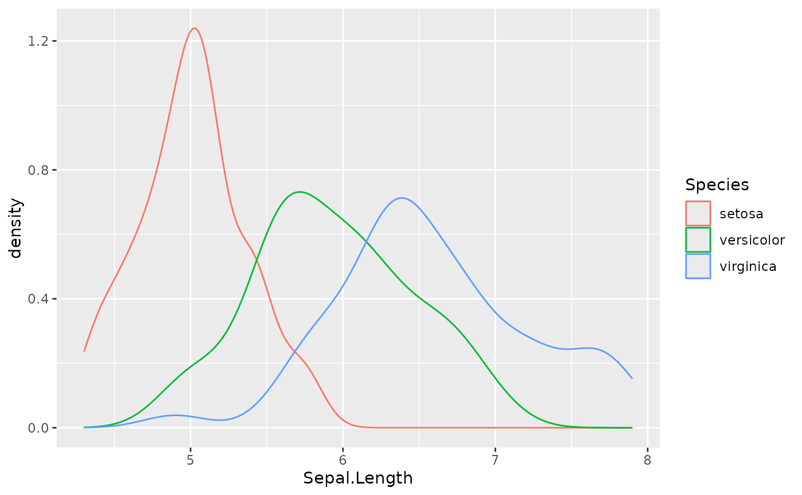
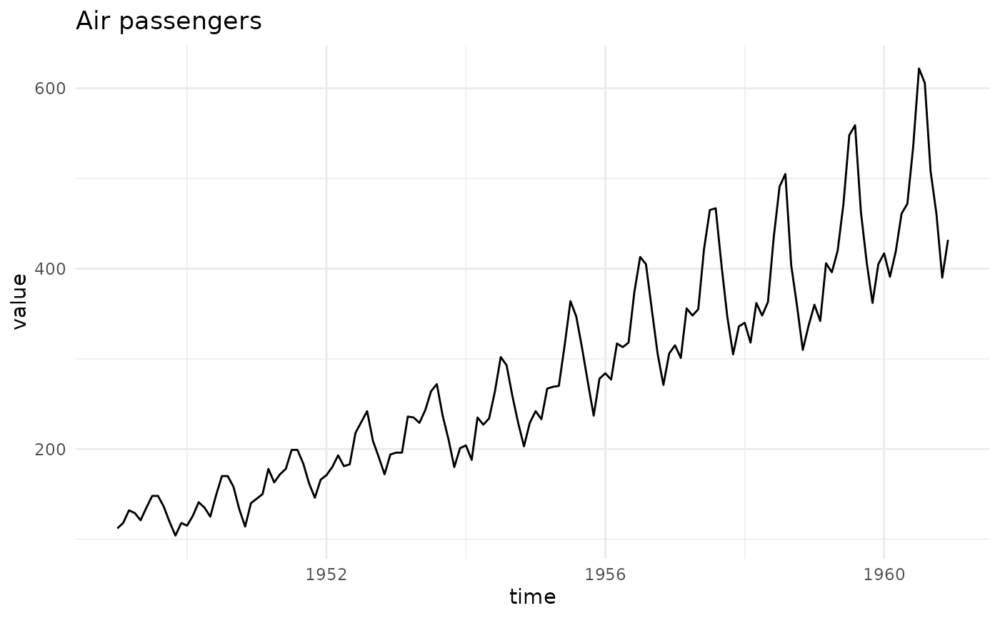
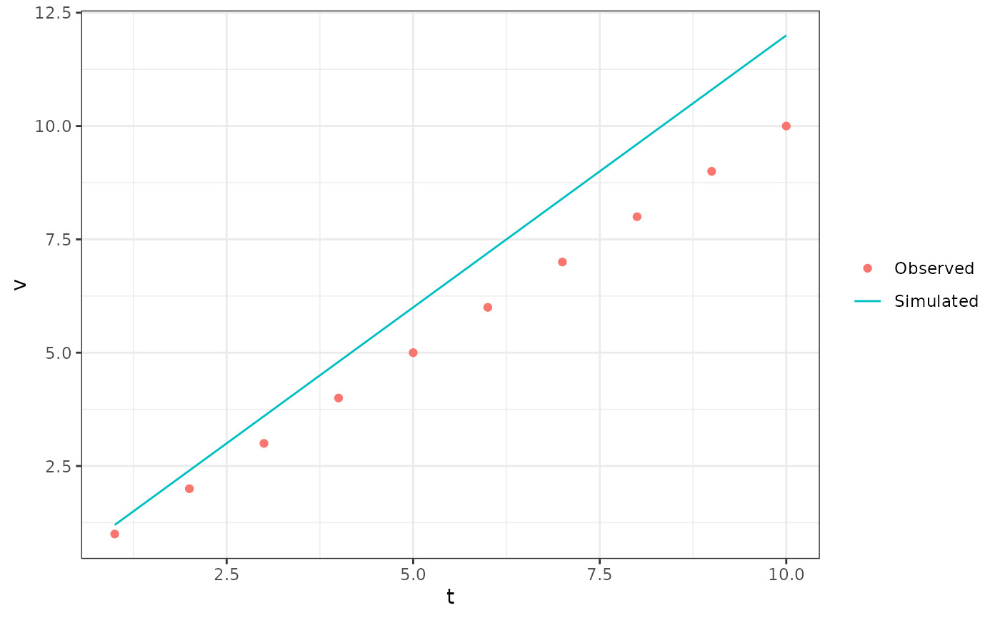

kggplot() builds a ggplot2 graphic (reshaping, mappings, geometry,
labels, theme, palette, legend, facets) from a data object and a few
short arguments, and returns a kggplot object. Print it to draw it,
compose it with +, or convert it with as_ggplot().
Usage
kggplot(data, ...)
# Default S3 method
kggplot(
data,
x = NULL,
y = NULL,
color = NULL,
fill = NULL,
group = NULL,
size = NULL,
shape = NULL,
alpha = NULL,
linetype = NULL,
label = NULL,
vars = NULL,
type = NULL,
title = NULL,
subtitle = NULL,
caption = NULL,
xlab = NULL,
ylab = NULL,
labels = NULL,
theme = NULL,
base_size = NULL,
palette = NULL,
legend = NULL,
facet = NULL,
facet_args = NULL,
...
)
# S3 method for class 'kggplot'
kggplot(data, new_data = NULL, ...)Arguments
- data
A data frame, or anything
as_kdata()understands (ts, matrix, vector, named list). If akggplot, a layer is added to it.- ...
Extra parameters of the geometry (
size = 3is an aesthetic argument, butwidth,bins,linewidth,show.legend... go here).- x, y, color, fill, group, size, shape, alpha, linetype, label
Aesthetics, see Details.
colouris accepted as an alias ofcolor.- vars
Optional named list of aesthetics (
list(x = "a", y = "b")), an alternative to the arguments above (they take precedence).- type
Plot type, see
kgg_types(); or a geom function. By default guessed from the data (line for dates andts, point for numericx/y, bar for a categoricalx, histogram/count for a lonex).- title, subtitle, caption
Plot titles.
- xlab, ylab
Axis titles (default: the variable names). Use
NAto remove a title.- labels
Named list of titles (
title,x,y,color,fill...) for anything not covered by the arguments above, e.g. legend titles.- theme
Theme: a name (
kgg_themes(),"bw", ...), a ggplot2 theme or a function. Seekgg_register_theme().- base_size
Base font size passed to the theme.
- palette
Colours for discrete
color/fill: a vector (named to fix level colours), a palette name (kgg_palettes()) or a function ofn. Default: the theme palette.- legend
"right","bottom","top","left","none"/FALSE, orc(x, y)to place it inside the panel.- facet
Facet variable(s): one name (wrap), two names (row, column grid) or a formula.
- facet_args
Named list of extra arguments for
ggplot2::facet_wrap()/ggplot2::facet_grid(), e.g.list(scales = "free_y").- new_data
For the
kggplotmethod: data of the new layer (default: the data of the first layer).
Mapping aesthetics
x, y, color, fill, group, size, shape, alpha, linetype
and label take column names (strings). Special values:
y = c("a", "b")ory = "all"plots several columns; they are stacked in long format and coloured by series (the pseudo-column".series"can be mapped to any aesthetic or facet).a string that is not a column, passed to
color,fillorgroup, creates a legend entry:color = "Observed"names the layer.I("red")(or a number, forsize,alpha...) is a fixed value, not a mapping.xomitted: the first column (or the row index ifyis given).yomitted: all the other columns.
Extending a plot
kggplot(p, new_data, ...) (with p a kggplot), p + kggplot(...) and
kgg_add() add a layer; colours stay consistent across layers. Any
ggplot2 component can be added with + (+ theme(...), + geom_hline(),
+ scale_x_log10()), and is applied last.
Examples
# scatter plot, coloured, themed: one call
kggplot(iris, "Sepal.Length", "Sepal.Width", color = "Species",
title = "Iris", theme = "inrae")

# several y columns at once, long-format handled for you
kggplot(iris, "Sepal.Length", c("Sepal.Width", "Petal.Width"),
type = "line")

# univariate types
kggplot(iris, y = "Sepal.Length", color = "Species", type = "density")

# time series input
kggplot(AirPassengers, title = "Air passengers", theme = "minimal")

# superpose a second dataset: consistent colours and a shared legend
obs <- data.frame(t = 1:10, v = cumsum(rep(1, 10)))
sim <- data.frame(t = 1:10, v = cumsum(rep(1.2, 10)))
kggplot(obs, "t", "v", color = "Observed", type = "point", theme = "bw") +
kggplot(sim, "t", "v", color = "Simulated", type = "line")
